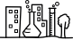
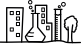

what we believe
what we believe
 professional development
professional development
 curriculum
curriculum
 city as lab 
city as lab 
 stories
stories
 contact
contact


We believe that all teachers are capable of teaching in a manner that is empowering, joyful and relevant to today’s learner, no matter their constraints. Our goal is to encourage and support these efforts at every level- classroom, school and curriculum.
By empowering, We mean practices that foster choice and voice, that free the learner from ONLY one way of knowing, that create an emotionally safe culture, that support meaning-making, that allow learners to feel successful and bring a high level of engagement through the learning process.
All of our work- be it with students, teachers, school leaders or the curriculum- is guided by our core beliefs about education, and rooted in a social justice framework. If you are considering working with us, we would like you to be familiar with our underlying assumptions and working philosophy.
- Learning is a social, meaning-making process that involves higher order thinking skills; it is also a personal journey that relies on making deep connections to individual experiences, knowledge and belief systems.
- One of the aims of education must be to develop the capacity to create positive, sustainable change i.e., develop agency. The purpose of education is NOT to learn how to do well on tests.
- The process of learning must reflect the aims of education. The two should be aligned.
- A safe, free and adaptive school culture is indispensable to supporting learners who are empowered and can take ownership of their own learning.
- The purpose of professional development is to promote praxis- a process of critical reflection, (using theory) and intentional action in order to transform one’s practice and oneself.
- Every learner is unique and has their own distinctive interests, preferences, talents and skills. The learning process must be joyful, relevant and empowering for every learner.